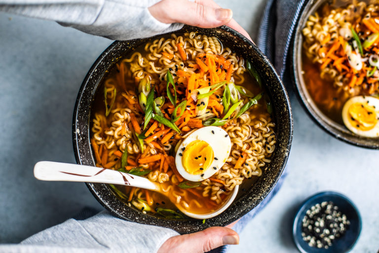

Ramen

Description
Ingredients
- Sesame Oil
- Olive Oil
- Garlic
- Fresh Ginger
- Chicken or Vegetable Broth
- Rice Vinegar
- Low Sodium Soy Sauce
- Sriracha or Hot Chili Garlic Sauce
- Shredded Carrots
- Shiitake Mushrooms
- Scallions
- Sesame Seeds
- Soft-Boiled Egg
Steps
- Heat the oil in a medium-sized saucepan over medium heat. Once the oil is hot, you’ll add the garlic and ginger, and simmer until fragrant.
- Add the rest of the veggies you want to cook—in this recipe, the carrots and mushrooms—and cook them until they soften up.
- Transfer the broth to the pot and add the rice vinegar, soy sauce, and Sriracha. Give the broth a good stir to combine the ingredients.
- Let the soup simmer for about five minutes, then give it a taste and add more soy sauce or Sriracha if needed. (This depends on how salty and spicy you want it.)
- While the soup simmers, cook the Ramen noodles in a separate pot as per the packages instructions.
- When done, drain, rinse under cool water, place into your soup bowl, and set aside.
- Once the broth is ready, spoon it over the noodles, then garnish the bowl with whatever you please!